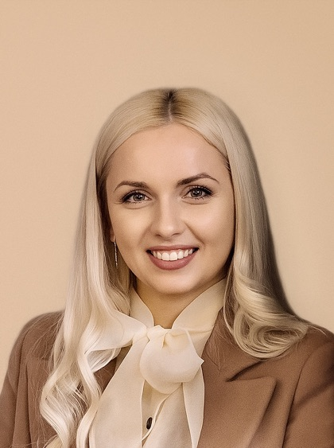

Сертифікати



Психолог в Ужгороді · онлайн та офлайн
Запис на консультаціюМене звати Марина Чернятʼєва. Я практикуючий психолог (магістр психології), клінічний психолог, сексолог, автор навчальних курсів і тренінгів. Працюю з дорослими, підлітками, парами та сім’ями, консультую з питань емоційного стану, самооцінки, тривожності, особистісних криз, стосунків, сексуальності та інтимної сфери. Окремі напрями моєї роботи - профорієнтація для підлітків, психологічна підтримка LGBT людей та професійний розвиток психологів-початківців у межах мого авторського проєкту «Дім психолога». У своїй роботі використовую інтегративний підхід, поєднуючи інструменти КПТ, схема-терапії, ACT та інших сучасних психотерапевтичних напрямів..
Психологія для мене - не просто професія. Це спосіб дивитися на людину глибше: за її словами, реакціями, звичками та навіть тим, що вона сама про себе ще не встигла зрозуміти.
Я досліджую, як формується наша особистість, звідки беруться внутрішні конфлікти, чому ми повторюємо одні й ті самі сценарії у стосунках, як тіло реагує на переживання і, найважливіше, як людина може змінити те, що колись здавалося незмінним.
Я з тих психологів, які постійно навчаються. Для мене професійність - це не статус, який одного разу отримуєш разом із дипломом, а постійний процес розвитку, поглиблення знань, супервізії та переосмислення власної практики. Мені важливо працювати сучасно, етично й дуже бережно до внутрішнього світу людини.
Моє покликання - бути поруч у моменти, коли особливо потрібна опора у найскладніші моменти життя людини. Допомагати проходити кризи, краще розуміти свої почуття й потреби, відновлювати самоцінність, будувати близькі та здорові стосунки, повертати внутрішню рівновагу та звільнятися від того, що більше не дає жити вільно.
Я не прагну дати готові відповіді. Мені важливо допомогти Вам почути власні.
Запрошую у простір, де можна бути собою - без необхідності здаватися сильнішою/им, ніж Ви є. Де ваші почуття мають значення, Ваша історія особлива. Професійно, делікатно з повагою та турботою.
Консультую онлайн з будь-якої точки світу, або офлайн в місті Ужгород.
Якщо ви в пошуках свого особистого спеціаліста — я поруч!
📩 Для запису
пишіть у ( Viber, Telegram, WhatsApp)
+38 (099) 438
09 91
Підтримка в особистісному розвитку, роботі з емоційними станами та пошуку рішень у складних життєвих ситуаціях.
Допомога у зміцненні взаємин, розвитку ефективної комунікації та подоланні криз у стосунках.
Програми для груп, організацій та освітніх закладів, спрямовані на розвиток взаємодії, психологічної грамотності
Підтримка підлітків 12–18 років: тривога, самооцінка, навчальний стрес, стосунки з батьками та однолітками.
Делікатна робота з інтимною сферою: бажання й лібідо, тривога у сексі, близькість у парі, сексуальна освіта.
Простір без осуду: прийняття себе, ідентичність, камінг-аут, стосунки та досвід дискримінації.
Авторська програма: психодіагностика здібностей, інтереси й цінності, вибір напряму та план вступу.
Регулярні групові зустрічі: емоції та саморегуляція, спілкування й кордони, самооцінка, булінг.
Авторський курс (інтенсив) «Від диплома — до приватної практики»: перші сесії, етика, супервізія, клієнти.
Перша сесія – це знайомство. Особливої підготовки не потребує, але є декілька важливих моментів:
Конфіденційність - це не красива обіцянка і не маркетинговий хід. Це базовий етичний принцип і закон у роботі психолога.
Ми , психологи працюємо із дуже різними людьми: з різним життєвим досвідом, посадами, статусом, публічністю. І незалежно від цього, єдина абсолютна цінність у роботі - безпека клієнта та збереження його особистої інформації.
Я чітко і без компромісів дотримуюся принципів конфіденційності у своїй практиці. Тільки так. І ніяк інакше.
Часто люди роками не наважуються звернутися за підтримкою - особливо коли йдеться про стосунки, мобінг, булінг, емоційне насильство чи складні внутрішні переживання. Іноді страх, що особиста інформація може вийти за межі кабінету психолога, змушує залишатися з труднощами наодинці.
Хочу запевнити вас: усе, що відбувається в кабінеті психолога, залишається в кабінеті психолога. Конфіденційність - це не спосіб заспокоїти клієнта, а обов’язкове правило нашої професії. ❗️Це не маркетинговий хід, а закон професії.
У терапії ви маєте право на безпеку, повагу, тишу й довіру. Саме в такому просторі можливі справжні зміни та відновлення.🤍
У будь-якому зручному для Вас месенджері: Telegram, Google Meet, Viber, WhatsApp, Zoom та інших.
Натисніть, щоб відкрити чат, або переглянути в соціальних мережах: